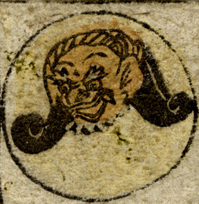

← 图鉴索引

瓦に彫刻された鬼の顔。鋭い牙がある。
出典：親書誌：U426_nichibunken_0238：妖怪十六むさし；ヨウカイジュウロクムサシ／日付：2010／資源識別子：U426_nichibunken_0238_0007_0000
Copyright (c)2010- International Research Center for Japanese Studies, Kyoto, Japan. All rights reserved.